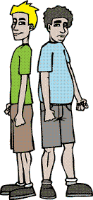

Sport and physical activity are pleasurable and popular teenage leisure activities. However, the favourite pastimes of many teenagers in Australia, especially during the school week, are television and various computer activities. The Australian Department of Health has recently developed physical activity recommendations for children and young people, to promote the importance of physical activity. |
![Fitness brochure, it reads: I fatti, Molte attività che preferiscono i ragazzi non richiedono molta attività fisica ma sono piuttosto sedentari (la tivù, il computer/PlayStation®). Molti vanno a scuola in macchina o in autobus. Pochi vanno a piedi o in bicicletta. La mancanza (lack) di attività fisica è un fattore che contribuisce all’obesità nei ragazzi. Inoltre la dieta non è sana. È possible evitare questa situazione. La soluzione è semplice. 1. Partecipare in attività fisica. 2. Seguire una dieta sana.](images/fitness.jpg) |
The recommendations are intended to identify the minimum level of physical activity required for good health for this age group.
Many activities that young people prefer do not require very much physical activity. Which things mentioned in the brochure encourage a sedentary lifestyle?
| Non richiedono molta attività fisica | |
|---|---|
| Which factors contribute to obesity in young people? | |
| How can obesity be avoided? | |
Now look at the physical activity recommendations for 5–18 year olds.
Do you want to know more? Read the brochure entitled Get out and get active, published by the Department of Health and Ageing to help young people get involved in physical activity.
Do you meet the minimum physical activity recommendation of 60 minutes a day?
| Perhaps you are already a fitness fanatic and are getting the recommended level exercise. It is still a good idea to document it. It is great to try new things and have new challenges. |  | Perhaps physical activity is not high on your list of priorities and you need some help to get started. Now is the time to start a new fitness routine! |
Your task is to develop a weekly fitness routine using the template in worksheet B1.8.
 |
Refer to Mantenersi in forma to help you with the fitness routine. Don't forget to include the length of time you propose for each activity. |
| Be realistic. Don't include things that you know are not achievable. You may need to start slowly and build up your fitness routine.
When planning your fitness routine, keep in mind the following points.
|
Keep a blog/diary of your fitness routine. Suggested blog/diary entries are two to three for the week.
| Use the past tense to describe what you have done in terms of fitness. Refer to Il passato prossimo (avere) and Il passato prossimo (essere) to help you with this activity. |  |
For inspiration, look at the following two blogs of two teenagers who are trying to keep fit and do physical activity every day. Non è facile!
Finalmente è primavera. Che bello! C’è il sole e il tempo è bellissimo. È perfetto per fare sport e essere all’aria aperta.
Ieri ho cominciato il mio nuovo programma da fitness. Il primo giorno è andato molto bene!
A scuola per l’ora d’educazione fisica abbiamo giocato a tennis.
Pomeriggio, mi sono allenato con la mia squadra di basket.
Stamattina, mi sono svegliato presto. Prima d’andare a scuola sono andato alla spiaggia e ho fatto surf. È favoloso fare surf alle 6 di mattina! È magico!
La scuola è stata abbastanza faticosa oggi.
Pomeriggio, ho suonato la batteria con la band della scuola e poi ho dovuto fare un sacco di compiti!!
È il quarto giorno che seguo il mio programma da fitness.
In questi giorni ho avuto troppi impegni a scuola.
Mercoledì pomeriggio ho giocato a basket poi ho studiato per più di tre ore senza nemmeno una pausa per il test di matematica!!
Per fortuna il test è andato benissimo.
Stamattina sono andato al parco e ho fatto jogging per circa 30 minuti. Questo pomeriggio sono riuscito d’andare in palestra prima d’andare al lavoro.
Adesso mi sento stanco morto. Domani è venerdì. Meno male! Ho bisogno di dormire tantissimo!| In the blog, il primo giorno and il quarto giorno are used. Primo and quarto are ordinal numbers.
|
Draft your blog/diary entries and reassess your progress after one week in the same worksheet above.